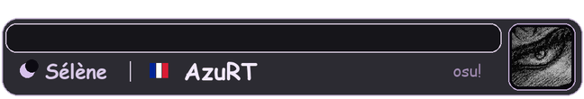
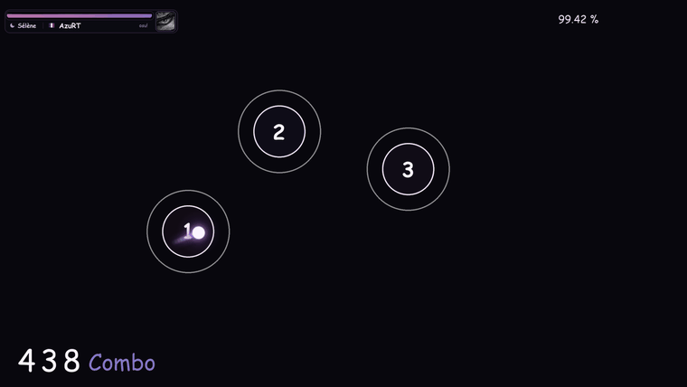
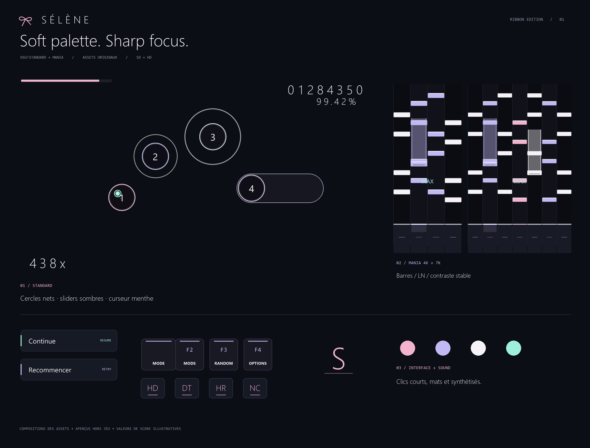

Téléchargez.
Un seul fichier .osk complet.
Aucune ancienne version requise.
Un peu de rose. Un peu de violet.
Et juste assez de lumière pour suivre chaque note.

01 — LES REPÈRES
Des bords blancs francs, des centres légèrement transparents et des chiffres plus grands. L’esthétique garde sa place. La note garde la priorité.
#FF8BC5#BF99FF#E79EF5Faites glisser la lumière.Traînée de démonstration dans le navigateur.
02 — LE MOUVEMENT
Un cœur clair aux nuances violettes et une traînée courte. Le curseur garde sa taille au clic pour offrir un repère stable.
Trois tailles au choix : 64 / 88 / 96 px ↘Le pack inclut déjà le curseur de 88 px. Les autres tailles sont facultatives.
03 — L’IDENTITÉ
La vie rose/violet, le croissant Sélène, le drapeau et le profil AzuRT partagent la même coque. Un seul bloc, à sa place.
LES PETITS DÉTAILS
Combo blanc et violet, rebond natif à chaque incrément. Pour les 100 et les 50, un petit :3 élastique apparaît puis s’efface.

04 — LE SON
Court, net, sans longue réverbération.
Écoutez les trois familles de hitsounds.
À vous de lancer le premier clic.
LE PACK, EN ENTIER
Composition des éléments du skin, valeurs illustratives. Les interfaces de navigation diffèrent entre stable et lazer.
05 — À VOUS DE JOUER
Un seul fichier .osk complet.
Aucune ancienne version requise.
Glissez le fichier dans osu!,
ou ouvrez-le par double-clic.
Sélectionnez « SELENE V1 Realease »
dans les options de skin.
LÀ OÙ TOUT A COMMENCÉ
La première version. Nacre, rose poudré et lavande.
Gardée ici, pour le plaisir de revenir au début.

Télécharger l’originale ↘Pack au format legacy, importable dans osu!stable et osu!lazer. Les assets de navigation ciblent surtout stable ; le HUD personnalisé, l’accuracy et le compteur de pp concernent lazer. Stable ne calcule pas les pp avec le skin seul.
Le jaune automatique tous les 100 combos n’est pas disponible dans le .osk. La position et l’orientation des jugements ne sont pas aléatoires dans cette V1. La taille du curseur, la sensibilité et les réglages mania restent à adapter à votre écran et à vos préférences.
Les archives, images et sons ont été contrôlés techniquement. Ce pack n’a pas encore fait l’objet d’un test d’import ou de gameplay en client. Les démonstrations du site utilisent les vrais assets ; elles ne constituent pas une capture du jeu ni une certification de performance.
Tous les détails dans le guide ↗